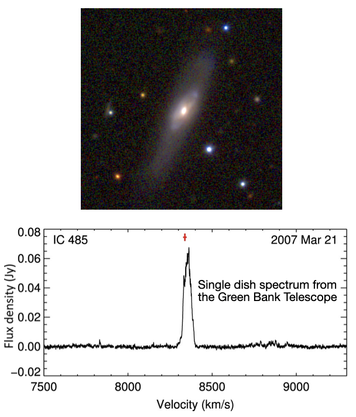
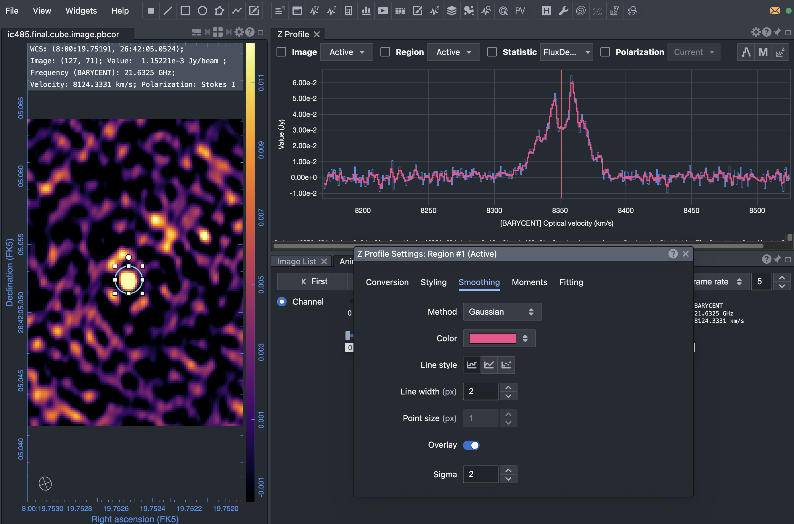
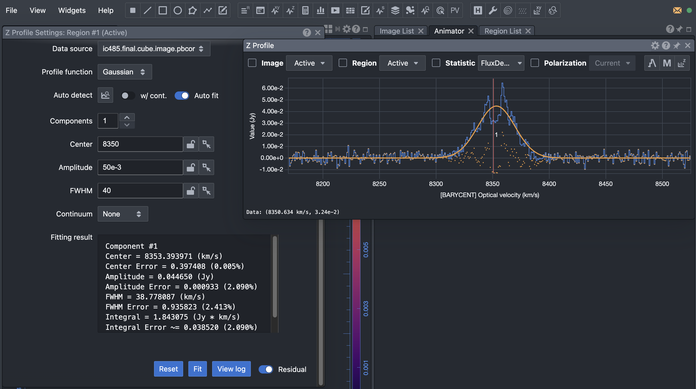
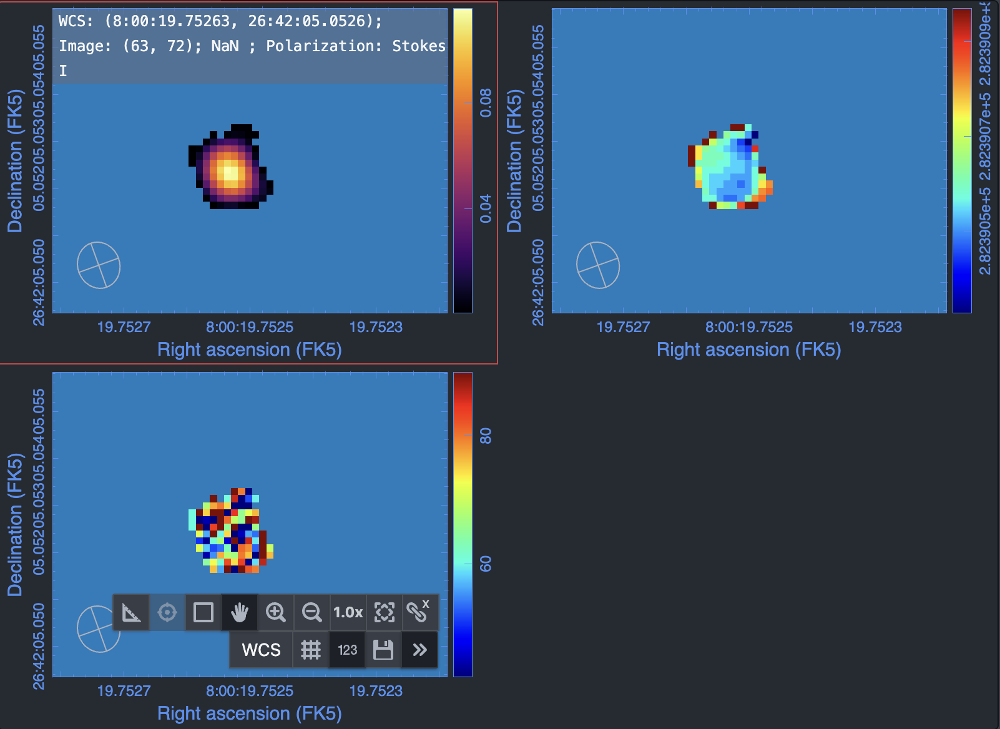

IC 485: H₂O Maser Imaging
Data required
In this final tutorial, we will work on yet another kind of source: an H₂O maser, IC 485. The data were obtained using the Very Long Baseline Array (VLBA) at K-band under the project code BT142 and are published in Ladu et al. (2024). These are the highest spatial resolution data of the three data sets we have used. The data are calibrated with AIPS (another software for processing radio astronomical data). This calibration process is similar (although not exact) to what you learnt in the imaging tutorials. We will import the uvfits file in CASA for imaging and analysis.
The calibrated dataset can be downloaded using the link below:
Alternatively, you can download and un-tar the data from the command line:
wget https://www.jb.man.ac.uk/ERIS26/data/ERIS26_sp_line_ic485.tar.gz
tar -zxvf ERIS26_sp_line_ic485.tar.gzAfter downloading the data, verify that the measurement set is available in your working directory before proceeding.
Table of contents
- Maser Lines
- IC 485: Water Maser
- Importing into CASA
- Inspect the data
- Determine the channels containing the line feature
- Phase shift the data
- Inspect the phase-shifted data
- Average the channels
- Parameters related to velocity and reference frames
- Creating a Dirty Cube
- Inspecting the cube
- Mask creation
- Producing the Final Cube
- Analysing the Final Cube
- Moment Maps
- Analysis using the cube
- Exporting the Results
1. Maser Lines
Maser emission is produced when radiation is amplified through stimulated emission in molecular gas. Unlike ordinary thermal spectral-line emission, masers can reach extremely high brightness temperatures and are among the brightest radio spectral-line sources known.
Because of their high brightness, masers can be observed at extremely high angular resolution using VLBI arrays, allowing the structure and kinematics of the emitting gas to be investigated on very small spatial scales.
In this tutorial we study H₂O maser emission from IC 485. Unlike the absorption observed in NGC 660 or the thermal molecular emission observed in TW Hya, the signal in this dataset is dominated by strong maser emission.
2. IC 485: Water Maser

Located at a distance of 122 Mpc (the linear scale is $\sim600\,\mathrm{pc\,arcsec^{-1}}$), IC 485 is a spiral galaxy showing a triple-peak profile (Pesce et al. 2015; the image on the right).
The sensitive single-dish spectrum together with the accurate position of the maser spots determined through 22 GHz VLBI observations indicate that the maser emission might be produced (at least in part) in an edge-on accretion disk oriented north-south, with a radius of $\sim0.24\,\mathrm{pc}$ (Ladu et al. 2024).
3. Importing into CASA
The data were calibrated in another software called AIPS. So first we shall import the data into CASA.
In CASA
importuvfits(
fitsfile='IC485.uvfits',
vis='ic485.ms'
)
4. Inspect the data
Before imaging any spectral-line dataset it is important to understand the data. The first step is therefore to inspect the measurement set and determine:
- The science target.
- The number of spectral windows.
- The total number of channels.
- The central observing frequency.
- The antenna configuration (how many antennas are present?).
Some of this information will be useful for the subsequent steps.
In CASA
listobs(
vis='ic485.ms',
)
Did you notice the FRAME in listobs output? It is already set to BARY. This is because the correction for the Earth's rotation and motion around the Sun was already applied to the dataset during the initial calibration steps in AIPS.
5. Determine the channels containing the line feature
Before producing a spectral cube we must determine which channels contain the emission line. In addition, we must determine if there is continuum emission and if yes, we need to identify channels that are free of line emission to be used later to fit and subtract the continuum.
A convenient way to do this is to average the visibilities and plot amplitude as a function of channel number/frequency/velocity (i.e. a spectrum).
In CASA
plotms(
vis='ic485.ms',
xaxis='channel',
yaxis='amp',
avgspw=False,
avgtime='1e9',
avgscan=True,
avgbaseline=True,
scalar=False,
showgui=True,
)
What do you see? The spectral line is evidently too weak to show up in a plot like this. In the plotms window, use the Data panel to average the channels. Do you see any sign of emission when you average a few channels together? Unlikely!
6. Phase shift the data
The line is not visible in plotms because the coordinates of the source used for observations were based on not-so-precise optical observations.
If you run listobs again, you will find that the phase center (the coordinates used to point the VLBA telescopes) is:
RA 08:00:19.76000 Dec. +26.42.05.100
New radio observations using the Very Large Array (VLA) by Darling (2017) tell us that the position of the maser centroid is
RA 08:00:19.75249 Dec. +26.42.05.053
Thus, the maser is offset by ~ -0.10" (RA) and ~ -0.05" (Dec.) from the phase centre. We will first shift the phase centre to the maser centroid and then proceed with the next steps.
In CASA
os.system('rm -rf ic485shift.ms')
phaseshift(
vis='ic485.ms',
outputvis='ic485shift.ms',
phasecenter='J2000 08h00m19.75249s +26d42m05.053s'
)
7. Inspect the phase-shifted data
Let us now check if the emission lines are visible in the phase-shifted data:
In CASA
plotms(
vis='ic485shift.ms',
xaxis='channel',
yaxis='amp',
avgspw=False,
avgtime='1e9',
avgscan=True,
avgbaseline=True,
scalar=False,
showgui=True,
)
The emission line is now clearly visible even without averaging any channels. Zoom-in to see the actual width of the line. It is about 200 channels wide!

listobs showed us that the dataset has over 2000 channels. Since the line is wide, we could average by 4 channels to reduce computation time.
Before proceeding, did you notice that there is no continuum emission in this dataset? So we will not be doing the continuum subtraction like we did for the other two sources!
8. Average the channels
In CASA
os.system('rm -rf ic485shift.ave4.ms')
mstransform(
vis='ic485shift.ms',
outputvis='ic485shift.ave4.ms',
datacolumn='all',
chanaverage=True,
chanbin=4
)
We shall use this dataset for further reduction.
9. Parameters related to velocity and reference frames
Just like NGC 660, IC 485 is an extragalactic source, and we therefore use
outframe='BARY' and veltype='optical'.
For NGC 660, we chose to set the systemic velocity to 0 km/s by using the redshifted line frequency. For IC 485, we will instead recover the galaxy's recession velocity by using the laboratory transition frequency of the water maser line, following standard practice in maser studies.
In CASA
rstfrq='22.2350798GHz'
10. Creating a Dirty Cube
Now we are ready to image the cube. Many of the parameters used for creating a cube are similar to what you used while creating a continuum image. The main difference is, while creating the continuum image you averaged all the channels together. However, here you are going to make an image of each channel (or a few channels averaged together) to obtain a three dimensional data product where the third dimension is the velocity axis. In the previous step we have already averaged the channels to produce an averaged visibility dataset. So we don't have to do that now.
Before performing any deconvolution it is often useful to examine the 'dirty cube'.
A dirty cube is produced by Fourier transforming the visibilities without applying any CLEAN iterations. Many of the parameters used for creating a cube are similar to what you used while creating a continuum image. The main difference is, while creating the continuum image you averaged all the channels together. However, here you are going to make an image of each channel (or a few channels averaged together) to obtain a three dimensional data product where the third dimension is the velocity axis.
This allows us to:
- Estimate the image noise.
- Inspect the quality of the data.
- Determine which channels contain emission (even the weak emission channels we may have missed in the plotms inspection earlier).
- Decide on an appropriate cleaning strategy.
The logic behind choosing a few parameters used below such as the 'imsize' and 'cell' are the same as what you learnt in continuum imaging. Can you tell us why we have chosen cell=0.00015arcsec? What about the choice of imsize?
In CASA
os.system('rm -rf ic485.dirty.cube.*')
tclean(
vis='ic485shift.ave4.ms',
imagename='ic485.dirty.cube',
imsize=[250, 250],
cell='0.00015arcsec',
perchanweightdensity=True,
specmode='cube',
start=0,
width=1,
outframe='BARY',
veltype='optical',
restfreq=rstfrq,
restoringbeam='common',
pbcor=True,
weighting='briggsbwtaper',
robust=0.5,
niter=0,
interactive=False
)
11. Inspecting the cube
First we would like to check the beam size, velocity resolution and other parameters of the cube.
In CASA
imhead(
imagename='ic485.dirty.cube.image.pbcor',
)
What is the beam size? What spatial scale does it correspond to at the redshift of IC 485? This is indeed extremely high spatial resolution!
Next we check the RMS noise in the line free channels. This provides a quantitative estimate of the sensitivity of the observations and will guide the choice of stopping threshold during CLEANing.
The imstat task calculates basic statistical properties of an image, including the mean, maximum value and RMS noise.
In CASA
imstat('ic485.dirty.cube.image', chans='1~200')
Measure the RMS noise in several more channels or channel ranges that appear free of emission. The values should be broadly consistent from channel to channel.
In CARTA
Open the dirty cube in CARTA and examine the emission channel by channel just like you did for TW Hya in the previous exercise.
Questions to consider:
- In which channels is the emission visible?
- Is the emission compact or extended?
- Is the emission detected at high significance?
The answers to the above questions will help determine the cleaning strategy and mask placement.
A common approach, when the spectral line is strong, is to clean to approximately three times the RMS noise level. A threshold significantly above the noise may leave emission in the residual image, while cleaning too deeply risks introducing artefacts. If the line is very weak, we do not clean at all.
Since the line is very strong, in this tutorial we adopt:
$\mathrm{threshold} = 3\times\mathrm{RMS} = 8.4\,\mathrm{mJy}$ (for an RMS of $2.8\,\mathrm{mJy\,beam^{-1}}$)
In CASA
thrshld='8.4mJy'
12. Mask creation
One last step before producing the final cube is to create a mask to define the region to be cleaned. This is similar to how we created the mask for TW Hya. With the dirty cube open in CARTA, draw a small region around the emission region. Be careful to exclude the sidelobes. Save this region file as: ic485.clean.mask.

13. Producing the Final Cube
Having inspected the dirty cube, estimated the noise level and identified the emission channels, we can now perform a full deconvolution.
We will use non-interactive cleaning here using the threshold and a common mask created using CARTA. It works very well in this case as the spatial distribution is simple (it is unresolved). In case of more complicated spatial structures, it is recommended to use a good mask.
For those cases, if you are running CASA on a Linux machine, you may choose interactive=True in tclean and draw the masks specifically around the regions of emission in the viewer (see the video in TW Hya).
Unfortunately, this feature is no longer available for MacOS users. It is possible to generate more sophisticated masks for CLEANing on MacOS as well as Linux using other software packages and then use it in such cases. Ask the tutors if you want to know more!
You may have noticed in the dirty cube that the emission is only in the very centre of the cube. So we could try to reduce the imsize for the final cube. Furthermore, the emission is seen in channels 400 to 500 and the total number of channels are ~900. Therefore, we could also try to exclude more edge channels and image only channels 250 to 650. This gives us enough line-free channels to characterise the emission itself while also reducing the computation time. We shall do that by setting start = 250, nchan=400.
In CASA
os.system('rm -rf ic485.final.cube.*')
tclean(
vis='ic485shift.ave4.ms',
imagename='ic485.final.cube',
imsize=[150, 150],
cell='0.00015arcsec',
specmode='cube',
perchanweightdensity=True,
start=250,
nchan=400,
width=1,
outframe='BARY',
veltype='optical',
restfreq=rstfrq,
restoringbeam='common',
pbcor=True,
deconvolver='hogbom',
weighting='briggsbwtaper',
robust=0.5,
niter=100000,
threshold=thrshld,
mask='ic485.clean.mask',
interactive=False
)
14. Analysing the Final Cube
The final science product is the primary-beam-corrected cube:
ic485.final.cube.image.pbcor
Once again check that the properties of the cube are as desired. Use imhead to inspect the basic properties of the cube (resolution, velocity resolution, number of channels, velocity type, etc).
In CASA
imhead(
imagename='ic485.final.cube.image.pbcor',
)
Begin by measuring the RMS noise in several line-free channels.
Next, inspect the cube in CARTA. Explore the data both spatially and spectrally:
- Use animator to look at the cube through different channels.
- Does the emission vary spatially as you move through different channels? Is the emission spatially resolved?
- Extract spectra from different pixels, from different regions using shapes (or boxes) and then also extract the integrated emission profile.
- Identify the velocity range of the emission.
- Does the spectral profile change spatially or does it remain the same?
15. Moment Maps
You have already learnt to generate moments using the CASA task immoments (TW Hya) and using CARTA. Generate the moment maps using the method of your preference (or both!).
Also see the CARTA moment map documentation for more details.
If you choose to use CASA, you could do this:
In CASA
os.system('rm -rf ic485.mom*')
immoments(
'ic485.final.cube.image.pbcor',
outfile='ic485.mom',
includepix=[8e-3, 100],
mask='ic485.final.cube.mask',
chans='155~242',
moments=[0,1,2]
)
ic485.final.cube.mask was created by tclean while making the final cube based on the region file we had provided and is useful for creating the moment maps.
If you choose CARTA, you could refer to the demonstration video for NGC 660. In this case, create a region around the emission and use that to define the boundaries while generating the maps.
View the moment maps in CARTA.

16. Analysis using the cube
Let us do some analysis using the final cube we have generated.
- Smooth the spectrum

- Fit a 1D Gaussian to the spectral profile.

- Fit a 2D Gaussian to the source using the moment-0 (integrated intensity) map

- Extract the integrated spectrum.
16A. Estimating Physical Properties
- Estimate the integrated intensity of the source.
- Calculate the isotropic luminosity of the source.
- Calculate the brightness temperature.
The integrated intensity ($\int S\,dv$) is simply the area under the Gaussian profile fitted to the spectrum in units of $\mathrm{Jy\,km\,s^{-1}}$.
The isotropic H₂O maser luminosity can be estimated using (Castangia et al. 2008):
\[ L_{\rm H_2O} = 0.023 \left(\frac{\int S\,dv}{\rm Jy\,km\,s^{-1}}\right) \left(\frac{D}{\rm Mpc}\right)^2 \]
where:
- $L_\mathrm{H_2O}$ is the isotropic maser luminosity in units of $L_\odot$.
- $\int S\,dv$ is the integrated intensity in $\mathrm{Jy\,km\,s^{-1}}$.
- $D$ is the distance to the source in $\mathrm{Mpc}$.
The brightness temperature can be estimated using:
\[ T = 1.36\,\frac{\lambda^{2}}{\theta_\mathrm{min}\,\theta_\mathrm{max}}\,S_\mathrm{peak} \]
where:
- $T$ is the brightness temperature in $\mathrm{K}$.
- $\lambda$ is the wavelength of the line in $\mathrm{cm}$.
- $\theta_\mathrm{min}$ and $\theta_\mathrm{max}$ are the FWHM major and FWHM minor axes of the 2D gaussian fit to the source structure.
- $S_\mathrm{peak}$ is the peak flux density in $\mathrm{mJy\,beam^{-1}}$.
Using the measurements from this tutorial, you should find (your estimates may differ slightly depending on your fit values):
- $L_\mathrm{H_2O} \approx 550\,L_\odot$
- $T \approx 3\times10^{9}\,\mathrm{K}$
17. Exporting the Results
As with the previous tutorials, export the final data products to FITS format.
In CASA
exportfits(
imagename='ic485.final.cube.image.pbcor',
fitsimage='ic485_final_cube.fits',
velocity=True,
overwrite=True,
)
Similarly export the moment maps and any other data products you created using CASA or CARTA.
Other Related Pages
Introduction page.
ALMA data on N₂H⁺ emission from a protoplanetary disc.
EVN data on HI absorption against a compact radio source.